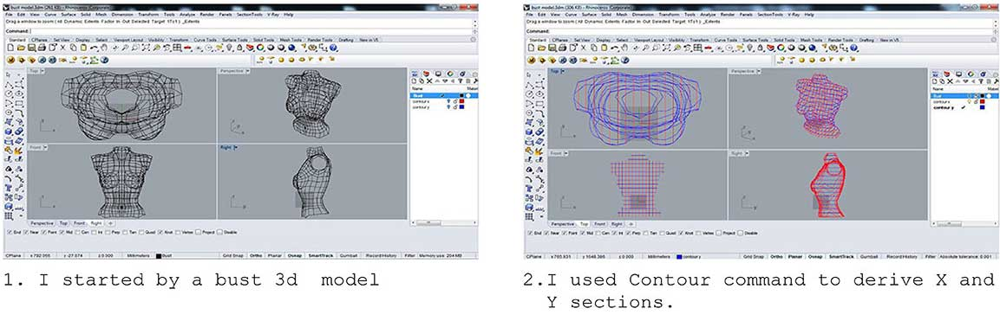
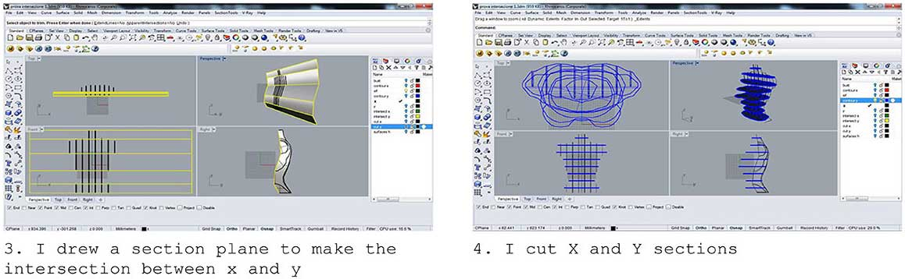
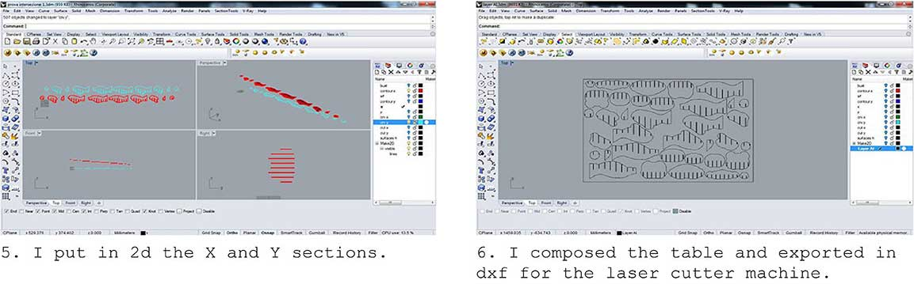
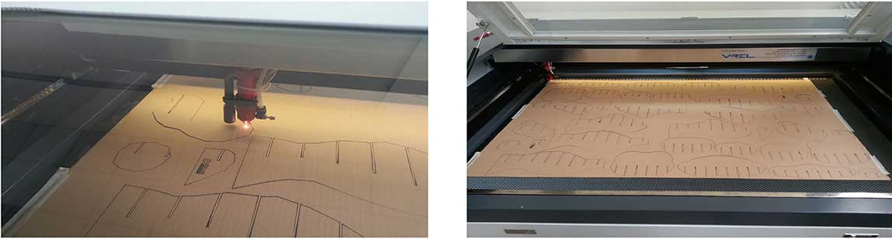

CLASS WEB PAGE: http://academy.cba.mit.edu/classes/computer_cutting/index.html
DOWNLOAD FILES:
-LASER CUTTER
| SECTION 2D
| STL
-VINYL CUTTER
| BMP
This week assignment was to create a press-fit kit using cardbord and the laser cutting machine.
For my CCC assignment I decided to build a bust of dummy in view of my final project. I thought to make it as a Waffle structure composed by vertical and horizontal sections.
However before designing there are some specifications to prepare the file. We need to consider which tools we will use and the specifications of material (size and thickness).
PROJECT AND PROTOTYPE:
I used Rhino5 to realize the shapes for the laser cutter machine.
  TUTORIALS MAIN REFERENCE:
https://www.youtube.com/watch?v=1BS-d1fVPoo
https://www.youtube.com/watch?v=XtM8mLQypJY
PARAMETERS TO CUT CARDBOARD:
LASER CUTTER VREL CO2 ME-1300
CUT: 200(Speed); 26(Power %); 11(Power Corner %)
Before using the machine must be carefull the following recomandations:
-Chiller is ON
-Air Compressor is ON
-The extractor fan is up and running
-Check that Safety Switch is all way up
-NEVER left the machine work unattende
CUTTING PROCESS:
 Technical Notes:
Laser Cutter Machine: VREL LASER CO2 ME-1300 (130W)
Material: Cardboard (800 x 1200 x 2.5) mm
VYNIL CUTTER:
A second exercise was learn to use the Vynil Cutter Roland SV-8 Stika ; the procedure was very simple: I drew my sticker in illustrator, then I exported my file in .bmp format. We all in the Fab Lab followed the same procedure by maachine manual: make a conversion using the software Paint to simplify the file information. I simply had to open and resave the file always in bmp being careful to options. To cut my sticker I used the Roland CutStudio software according these steps:
-Select and Import file in CutStudio
-Set size of the paper and the position & depth of the blade (I did that manually)
-Uncheck the voice Extract the contour lines of the drawing and start to cut.
The first sticker I tried to cut was too defined to use it with Vynil Cutter, so I drew a second sticker easier. Nevertheless there are not big difficulties with the machine. One thing apparently simple is to make sure that the paper is really stopped and stretched.